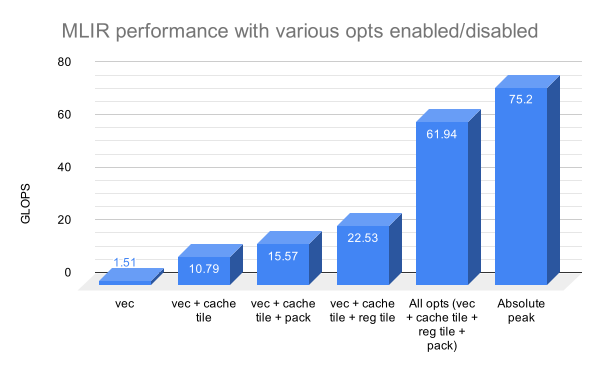
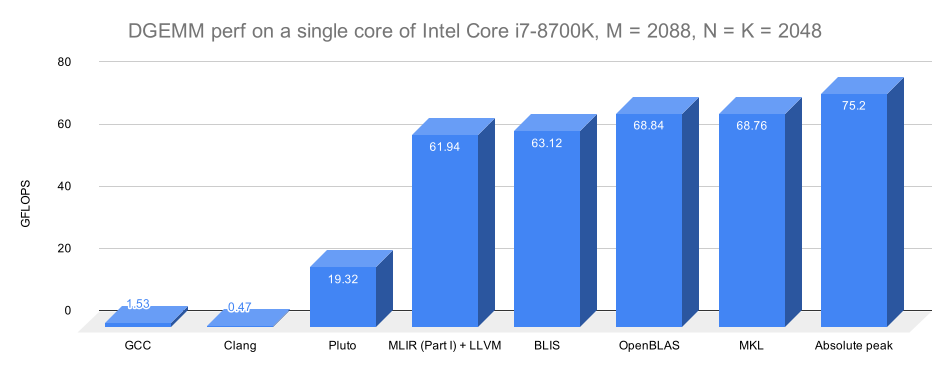
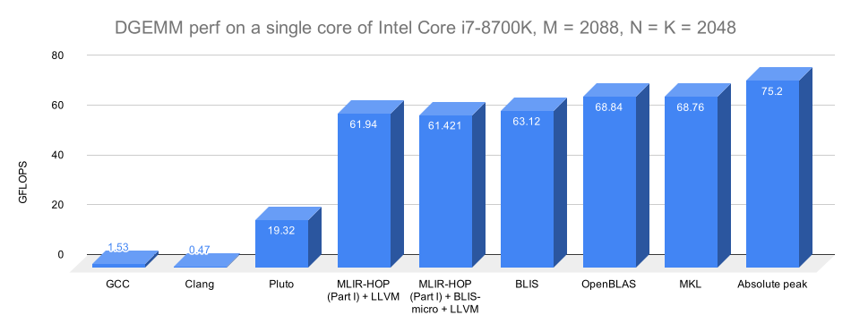
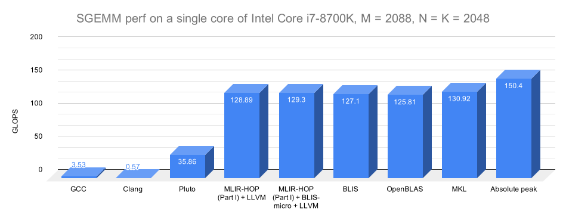

*Figure: Tiling strategy of OpenBLAS/BLIS. Figure courtesy: [Field Van Zee](http://www.cs.utexas.edu/users/field/) and [Robert van de Geijn](https://www.cs.utexas.edu/~rvdg/).*
This document is primarily a tutorial on using MLIR for high-performance code generation. It in particular covers memrefs, the affine dialect, and polyhedral utilities and pass infrastructure surrounding those. As a by-product, this document is also meant to show the role compiler infrastructure can play in generating code that is competitive with highly tuned manually developed libraries in a more modular, reusable, and automatable way.
It is well-known that some of the most crucial routines that drive the state-of-the-art in domains such as dense linear algebra and deep learning are all based on carefully hand-optimized and tuned libraries but with a lot of engineering effort and insights over time. The techniques necessary and the level of attention that has to be paid optimizing for an architecture makes it often inaccessible to those without a deep knowledge of low level interactions with architecture and code optimization. In many cases, the best performing code comes from the hardware vendors itself. Yet, fortunately, there are published works such as those of [Goto and Van de Geijn 2008] that have described in great detail how such close to peak performance could be obtained. Subsequent works made the process more modular, reusable, and accessible to a wider audience, having translated to an open-source project FLAME/BLIS.
This tutorial alludes to the fact that this process could potentially be made even more modular, automatable and systematic — by hosting it on top of a real compiler IR that has the necessary abstractions and infrastructure. This completely avoids the need to write any code by hand — be it C or inline assembly. The IR infrastructure that will be used here is of course, MLIR, and we will try to recreate the OpenBLAS/BLIS' approach to tiling in a compiler-oriented way using MLIR.
We are going to be using a Intel Skylake-based high-end desktop/workstation processor for all experimentation. The processor is an Intel® Core™ i7-8700K CPU @ 3.70GHz. Note that although is based on the Skylake microarchitecture, it’s not a SkyLake-X: as such, its vectors are not AVX-512, but just AVX-2 (256-bit).
Before we start, we are going to compute the machine peak on it. This processor supports AVX-2 and has two FMA units that can operate on 256-bit wide vectors. As such, one can perform 2 * 4 * 2 double precision floating-point multiply and adds per cycle, which at the max turbo boost frequency of 4.7 GHz would translate to 75.2 GFLOPS. (Frequency scaling can impact how this figure is calculated, but we’ll ignore that for now.)
Matrix-matrix multiplication is often an excellent routine for a tutorial or exercise in code optimization because a number of standard practices could be demonstrated using it. It is also one of the most important ones for many domains and thus often the first thing one builds an optimized implementation for when rolling out a new architecture.
Let’s take a 2088x2048 double precision matrix-matrix multiplication, and benchmark it in various ways. (We choose 2088 here since it’s divisible by both 4 and 3: this makes it easier to read some of the snippets given that we’ll be exploring register tiling by sizes that are multiples either of 2, 3, or 4.)
Let’s see what current compilers do if this is written as a naive nest in C. These results can be reproduced with the setup in Pluto from under examples/matmul/.
``` ₹ clang -v clang version 8.0.0 (Fedora 8.0.0-3.fc30) Target: x86_64-unknown-linux-gnu
$ clang -O3 -DTIME matmul.c -o matmul.clang -lm [uday@ukr-xps ~/git/pluto/examples/matmul]₹ ./matmul.clang 36.484855s 0.47 GFLOPS
$ gcc –version gcc (GCC) 9.2.1 20190827 (Red Hat 9.2.1-1)
$ gcc -O3 -DTIME matmul.c -o matmul.gcc -lm $ ./matmul.gcc 11.142771s 1.54 GFLOPS ```
Disappointingly, clang and GCC are at 0.6% and 2% of the machine peak
respectively! :-( But general-purpose compilers aren’t expected or meant to get
anywhere to the peak. Programmers instead typically use highly tuned libraries.
We’ll get to that shortly, but while on this let’s also see what a polyhedral
tool (Pluto), which is a source to source
translator, does on this. The below run shows it’s at about 25% of the machine
peak, which is better but also pretty unsatisfying.
$ make tiled
./tiled
0.889177s
19.32 GFLOPS
Now, let’s see what the fastest libraries in the world do on matmul. Again, the setup in Pluto allows experimenting with OpenBLAS, BLIS, or MKL quickly.
``` ₹ make mkl blis openblas
₹ ./blis 63.29 GFLOPS
$ ./openblas 0.259527s 67.49 GFLOPS
$ ./mkl 0.273492s 67.70 GFLOPS ``` MKL and OpenBLAS are nearly at 92% of the peak (68/75.2), while BLIS is close at 85% of the peak. We’ll keep these in mind as we try out how to build high-performance versions with MLIR. [Note: we haven’t been very rigorous with the above experimentation in terms of performing warmup runs, taking an average across repetitions etc., but our goal is to just get a reasonably accurate picture for now.]
There is currently no C/C++ or a frontend that emits MLIR. The way to get something in MLIR run on CPUs is through mlir-cpu-runner which can take MLIR as input and JIT compile and execute it. As part of this process, optimized MLIR is converted to LLVM IR, which then goes through its optimization pipeline to generate target code, all of this through mlir-cpu-runner.
Here is how a simple canonical matrix-matrix multiplication looks like in MLIR – the structure is close to its form in C.
``` // C += A * B. func @matmul(%A: memref<2048x2048xf64>, %B: memref<2048x2048xf64>, %C: memref<2048x2048xf64>) -> memref<2048x2048xf64> { affine.for %arg3 = 0 to 2048 { affine.for %arg4 = 0 to 2048 { affine.for %arg5 = 0 to 2048 { %a = affine.load %A[%arg3, %arg5] : memref<2048x2048xf64> %b = affine.load %B[%arg5, %arg4] : memref<2048x2048xf64> %ci = affine.load %C[%arg3, %arg4] : memref<2048x2048xf64> %p = mulf %a, %b : f64 %co = addf %ci, %p : f64 affine.store %4, %C[%arg3, %arg4] : memref<2048x2048xf64> } } } return %C : memref<2048x2048xf64> }
func @main() { %A = alloc() : memref<2048x2048xf64> %B = alloc() : memref<2048x2048xf64> %C = alloc() : memref<2048x2048xf64>
%cf1 = constant 1.00000e+00 : f64
linalg.fill(%A, %cf1) : memref<2048x2048xf64>, f64 linalg.fill(%B, %cf1) : memref<2048x2048xf64>, f64 linalg.fill(%C, %cf1) : memref<2048x2048xf64>, f64
call @matmul(%A, %B, %C) : (memref<2048x2048xf64>, memref<2048x2048xf64>, memref<2048x2048xf64>) -> (memref<2048x2048xf64>) call @print_memref_2d_f64(%C): (memref<2048x2048xf64>) -> () return }
func @print_memref_2d_f64(memref<2048x2048xf64>) ```
affine.for and affine.load/store are ops from the Affine dialect used above. The IR above also uses a helper op from the LinAlg dialect to initialize matrices. The rest like (addf, mulf, alloc) are all ops from MLIR’s standard dialect.
A memref is a reference to the in-memory representation of a tensor value in MLIR. Depending on its layout map, it could refer to a potentially non-contiguous sub-region of the tensor’s buffer. All memrefs in the above snippet have the default identity layout map (d0, d1) -> (d0, d1), which corresponds to a row major layout of in contiguous memory. 2088 x 2048 is the shape of memref where each of its element is an f64 (double). There is other information such as an affine layout map (a mapping for its logical coordinate space to physical memory) that is elided when these are an identity map (the default). We will look at an example of this a little later. The only way to access the elements of a memref is through load and store operations. .
MLIR is extensible in several ways, and one of them is in the ease of adding/creating new ops at the level of abstraction we desire. One way of classifying ops or IR in general in MLIR is into high-level, mid-level, and low-level although there isn’t a clear distinction and lowering can be progressive and you can have a mix. High-level ops operate on tensor and memref types themselves, i.e., their inputs (operands) and results are of that type. affine.for and affine.if are mid-level ops – these have nested blocks (which are themselves a list of ops) and a particular structure to them. Low-level ops are at the same level as instructions in MLIR, and these typically correspond to either one or a flat sequence of instructions matching a target (three address code style in other words).
If one is building a DSL and knows that they need or have a matmul, one could just define an op that does the matmul taking memrefs as operands. For the purpose of this tutorial, we will create a hop.matmul op. An operation in MLIR typically has inputs, results, and attributes (ones with regions have region arguments as well).
"hop.matmul"(%A, %B, %C) {some_attr = 96, another_attr = 4}
: (memref<2088x2048xf64>, memref<2048x2048xf64>, memref<2048x2048xf64>)
hop.matmul above is an operation that operates on three memrefs, %A, %B, and %C,
which are the LHS, the RHS, and the output corresponding to a matrix-matrix
multiplication. This op has zero results: since these are memrefs, the
underlying memory can be updated, but the memref itself is an SSA value and thus
can be defined only once. In this case, %C will be both read and written by this
heavy op. some_attr is an attribute of the op, which like in LLVM is meant to
be a constant of one of the numerous types available including some polyhedral
types like affine
maps
and integer
sets.
Such polyhedral attributes could be used to encode powerful information and
we’ll see an example of this later.
For the purpose of this tutorial, we create an -hopt pass that is able to expand out hop.matmul into the naive 3-d loop nest shown further above. Let’s just execute this with MLIR without any optimization to see where we are starting our journey from.
$ mlir-opt -hopt -lower-to-llvm hopt.mlir | mlir-cpu-runner -O3 -e main -entry-point-result=void -shared-libs=lib/libmlir_runner_utils.so > /dev/null
Compilation time: 0.015995s
0.558177 GFLOPS
This is pretty close to the execution time of `clang -O3' that we saw above,
which makes sense, but this is equally slow (less than 1% of the machine peak)!
But we haven’t really made use of or run any of the optimization infrastructure
in MLIR. The -hopt here just lowers this op into the canonical 3-d loop nest
shown further above, which is then lowered to LLVM.
Tiling and blocking has been studied for several decades, and it is now known how matrix-matrix multiplication should be tiled for high performance on widely used architectures. We are going to use the same cache tiling strategy used in OpenBLAS and BLIS. This scheme is a very clever one that carefully tiles for multiple levels of the cache in a way that exploits reuse for each of the matrices involved at one level or another: the objective is to make sure vector FMA/add mul pipeline remains full and one doesn’t wait for loads. It does not blindly tile the nest multiple times to exploit reuse for all matrices at L1, L2, and L3, as would most polyhedral tools do.
There are various ways of describing OpenBLAS’s/BLIS' tiling scheme and they are explained in excellent detail with illustration in the papers by Van Zee and van de Geijn on BLIS, and later with analysis and modeling by Low et al. 2016. But here, we will describe the tiling transformation compactly via polyhedral schedules. For an introduction to polyhedral schedules, see here or the material on polyhedral.info. In particular, the tiling and corresponding intra-tile loop orders used in the OpenBLAS/BLIS approach can be expressed as the following polyhedral schedule:
(i, j, k) -> (j / N_C, k / K_C, i / M_C, j / N_R, i / M_R, k, j mod N_R, i mod M_R)
The innermost two loops after applying the above schedule are meant to be fully
unrolled leading to an M_R x N_R loop body. Ignoring tiling for the L3 cache,
this becomes:
(i, j, k) -> (k / K_C, i / M_C, j / N_R, i / M_R, k, j mod N_R, i mod M_R)
The following from the BLIS works (source in caption) is a great illustration of its optimization strategy.
The parameters (M_C, K_C) are chosen such that a tile of the LHS matrix (%A) of size M_C x K_C is reused in the L2 cache, an RHS matrix tile of size K_C x N_R is reused in the L1 cache, while a register tile of the output matrix %C of size M_R x N_R is reused in just the registers. There are several other considerations in choosing these parameters if one is interested in analytical modeling; those are described in the work of Low et al. 2016. The last three dimensions of the schedule are multiplying a panel of %A of size M_R x K_C with a panel of %B of size K_C x N_R. Note that %C is being both read and written, and intuitively, it makes sense to exploit reuse for it in the registers while running a large enough k intra-tile loop at the innermost level. In the schedule above, the innermost two dimensions (j, i) are fully unrolled, i.e., you get an unrolled body of size M_R x N_R times the original one. For readers seeking more detail in general on this and on programming for high performance, please see these course notes from the same group or the papers in References.
There are two ways of achieving this tiling in MLIR; one by calling mlir::tile, (which is also what the loop tiling pass in MLIR uses), and then performing the desired loop interchange via mlir::interchangeLoops. The other is by implementing a higher order polyhedral (HOP) approach based on domains and schedules. We use this latter approach here since MLIR’s affine analysis machinery does not yet have the necessary simplification to get rid of certain redundant bounds resulting from tiled code generation in advanced cases. The HOP approach depends on an external library, ISL, and we implement this as part of the -hopt pass. We express the tiling schedule as an MLIR affine map (in fact, any affine schedule could be used), perform the code generation via ISL, and convert the ISL AST back to MLIR. We will now use M_C, K_C, M_R, N_R as attributes on the hop.matmul op.
"hop.matmul"(%A, %B, %C) { M_C = 64 : i32, K_C = 256 : i32, M_R = 4 : i32, N_R = 8 : i32}
: (memref<2088x2048xf64>, memref<2048x2048xf64>, memref<2048x2048xf64>) -> (memref<2048x2048xf64>)
We’ve used K_C = 256, M_C = 64, M_R = 8, N_R = 4 as a starting point: these can
be analyzed to be good values given the cache size constraints described
earlier. We’ll add one more parameter to the list, K_U, which will be the
unroll factor for the K_C loop (intra-tile loop corresponding to k reduction
dimension).
Now, with the schedule that performs the specific tiling used by BLIS, we get this tiled loop nest:
affine.for %arg3 = 0 to 8 {
affine.for %arg4 = 0 to 32 {
affine.for %arg5 = 0 to 256 {
affine.for %arg6 = #map9(%arg4) to #map10(%arg4) {
affine.for %arg7 = #map7(%arg3) to #map8(%arg3) {
affine.for %arg8 = #map5(%arg5) to #map6(%arg5) {
%0 = affine.load %B[%arg7, %arg8] : memref<2048x2048xf64>
affine.for %arg9 = #map3(%arg6) to #map4(%arg6) {
%1 = affine.load %A[%arg9, %arg7] : memref<2048x2048xf64>
%2 = affine.load %C[%arg9, %arg8] : memref<2048x2048xf64>
%3 = mulf %1, %0 : f64
%4 = addf %2, %3 : f64
affine.store %4, %C[%arg9, %arg8] : memref<2048x2048xf64>
} {poly_codegen_name = "c6"}
} {poly_codegen_name = "c5"}
} {poly_codegen_name = "c4"}
} {poly_codegen_name = "c3"}
} {poly_codegen_name = "c2"}
} {poly_codegen_name = "c1"}
} {poly_codegen_name = "c0"}
Note that the invariant load on %A has been hoisted. When we execute this, we get:
```
$ mlir-opt -hopt -lower-to-llvm hopt.mlir | mlir-cpu-runner -O3 -e main -entry-point-result=void -shared-libs=lib/libmlir_runner_utils.so > /dev/null Compilation time: 0.0443082s 2.17698 GFLOPS ```
This is roughly a 4x improvement in performance, but still no where close to the machine peak or the performance of MKL, OpenBLAS or BLIS!
Whenever a code with multi-dimensional arrays exhibits reuse, explicit copying or packing is a commonly used technique in HPC, which first copies or packs accessed data into contiguous buffers and indexes those buffers for computation. Such copying reduces or nearly eliminates conflict misses, TLB misses, and improves hardware prefetching performance (since the access will lead to fewer prefetch streams). More importantly, in conjunction with tiling, it provides the intended benefits of tiling. On the one hand, tiling is performed so that reuse is exploited in multiple directions when the data accessed fits in a higher level of the memory hierarchy, on the other hand, the data accessed for a tile is no longer contiguous in the original matrix/tensor leading to conflict misses, TLB misses, and more prefetch streams — taking away a lot of the gain even if there is high reuse. There is also a choice in terms of which depth / where one would like to introduce the copies, but this is quite clear for the tiling strategy we are using.
The packing optimization is something that one would really wish a compiler performs automatically. MLIR has a pass -affine-data-copy-generate and a utility mlir::affineDataCopyGenerate that can perform explicit copying or packing. The utility can also be called on a specific memref to perform the packing at a specific loop depth, and with a number of other options (including DMA support).
With the tiling approach we are using here, packing is performed for the LHS matrix %A right under the second loop (i floordiv K_C dimension in the schedule). For %B (RHS matrix), the copying is performed right under j floordiv N_R (the third dimension).

Figure: The one in green is the LHS to be packed into a buffer that will reside in L2, and the RHS in blue will reside in L1..
To perform the packing automatically with MLIR, instead of calling the -affine-data-copy-generate pass, we will just use the underlying utility mlir::affineDataCopyGenerate to place copies at the right depths. For the purpose of this tutorial, we enabled this under the -hopt-copy option. With -hopt-copy, now the nest looks like:
affine.for %arg3 = 0 to 8 {
affine.for %arg4 = 0 to 32 {
%0 = alloc() {alignment = 32 : i32} : memref<64x256xf64>
// Packing for %A into 64x256 buffer.
affine.for %arg5 = #map6(%arg4) to #map7(%arg4) {
affine.for %arg6 = #map4(%arg3) to #map5(%arg3) {
%1 = affine.load %arg0[%arg5, %arg6] : memref<2048x2048xf64>
affine.store %1, %0[%arg4 * -64 + %arg5, %arg3 * -256 + %arg6] : memref<64x256xf64>
}
}
affine.for %arg5 = 0 to 256 {
%1 = alloc() {alignment = 32 : i32} : memref<256x8xf64>
// Packing for %B into 256x8 buffer.
affine.for %arg6 = #map4(%arg3) to #map5(%arg3) {
affine.for %arg7 = #map9(%arg5) to #map10(%arg5) {
%2 = affine.load %arg1[%arg6, %arg7] : memref<2048x2048xf64>
affine.store %2, %1[%arg3 * -256 + %arg6, %arg5 * -8 + %arg7] : memref<256x8xf64>
}
}
affine.for %arg6 = #map16(%arg4) to #map17(%arg4) {
// This is multiplying a packed 64x256 LHS panel with a packed 256x8 RHS panel.
affine.for %arg7 = 0 to 256 {
affine.for %arg8 = 0 to 8 {
affine.for %arg9 = 0 to 4 {
%2 = affine.load %0[%arg4 * -64 + %arg6 * 4 + %arg9, %arg7] : memref<64x256xf64>
%3 = affine.load %1[%arg7, %arg8] : memref<256x8xf64>
%4 = affine.load %arg2[%arg6 * 4 + %arg9, %arg5 * 8 + %arg8] : memref<2048x2048xf64>
%5 = mulf %2, %3 : f64
%6 = addf %4, %5 : f64
affine.store %6, %arg2[%arg6 * 4 + %arg9, %arg5 * 8 + %arg8] : memref<2048x2048xf64>
}
}
}
}
dealloc %1 : memref<256x8xf64>
}
dealloc %0 : memref<64x256xf64>
}
}
$ mlir-opt -hopt -hopt-copy=true -lower-to-llvm hopt.mlir | mlir-cpu-runner -O3 -e main -entry-point-result=void -shared-libs=lib/libmlir_runner_utils.so > /dev/null
Compilation time: 0.116971s
3.4348 GFLOPS
This is nearly a 1.5x improvement in performance, but in absolute terms still pretty bad. On a general note, the benefit of any optimization often depends on how well optimized the code is on other aspects before the optimization was applied – even more so in this case. It’s important to be mindful of this in order to not draw incorrect conclusions on the relative benefits of each individual transformation at this time. For example, the benefits of cache tiling on a code where unroll-and-jam or register tiling has already been performed is significantly lower than on a version where no optimizations were performed. We will look at an example a little later.
Note that our schedule already performed tiling so that an unroll-and-jam of the innermost two loops by N_R and M_R respectively could be achieved, but we actually didn’t enable that yet. We use the option -hopt-unroll to turn this on and off. We also run scalar replacement in MLIR post unroll-and-jam. Besides turning memref locations being reduced into scalars (single element memrefs) and hoisting them out, it also eliminates redundant loads, and hoists invariant loads out of loops.
$ mlir-opt -hopt -hopt-copy=true -hopt-unroll=true -hopt-scalrep=true -lower-to-llvm hopt.mlir | mlir-cpu-runner -O3 -e main -entry-point-result=void -shared-libs=lib/libmlir_runner_utils.so > /dev/null
Compilation time: 0.11306s
4.24429 GFLOPS
This is just a further improvement of 30%. All of these improvements are significant from where we started but they are all finally just too little on an absolute scale even after having reproduced a part of the OpenBLAS/BLIS recipe (we are still at about 6% of the peak!). Clearly, there is something orthogonal that all of this is missing. It looks like we completely missed vectorization! The highly tuned library kernels that we’ve set as a target often used a careful selection and schedule of vector instructions in inline assembly.
Let’s see whether our code is even being vectorized reasonably under the hood by LLVM. It’s pretty straightforward to check this. Instead of looking at the pass output remarks, we’ll just look at the generated assembly. The ‘-dump-object-file -object-filename’ options of mlir-cpu-runner are useful for this purpose. ``` $ mlir-opt -hopt -hopt-copy=true -hopt-unroll=true -hopt-scalrep=true -lower-to-llvm hopt.mlir | mlir-cpu-runner -O3 -e main -entry-point-result=void -shared-libs=lib/libmlir_runner_utils.so -dump-object-file -object-filename=hopt.o > /dev/null $ llvm-objdump -d hopt.o | less … 14e5: c4 e2 a9 b9 e2 vfmadd231sd %xmm2, %xmm10, %xmm4
1856: c4 42 e5 a8 f8 vfmadd213pd %ymm8, %ymm3, %ymm15
185b: c4 e3 79 05 a9 30 ff ff ff 01 vpermilpd $1, -208(%rcx), %xmm5
1865: c4 41 7d 28 e6 vmovapd %ymm14, %ymm12
186a: c4 63 fd 01 f5 55 vpermpd $85, %ymm5, %ymm14
1870: c4 62 7d 19 c5 vbroadcastsd %xmm5, %ymm8
1875: c4 62 e5 a8 c2 vfmadd213pd %ymm2, %ymm3, %ymm8
187a: c4 42 e5 a8 f5 vfmadd213pd %ymm13, %ymm3, %ymm14
187f: c5 fd 10 b9 40 ff ff ff vmovupd -192(%rcx), %ymm7
1887: c4 e2 7d 19 b1 40 ff ff ff vbroadcastsd -192(%rcx), %ymm6
1890: c4 e3 fd 01 d7 ff vpermpd $255, %ymm7, %ymm2
1896: c4 e2 e5 a8 d0 vfmadd213pd %ymm0, %ymm3, %ymm2
189b: c5 fd 29 93 00 01 00 00 vmovapd %ymm2, 256(%rbx)
18a3: c4 e3 fd 01 ef 55 vpermpd $85, %ymm7, %ymm5
18a9: c4 63 fd 01 ef aa vpermpd $170, %ymm7, %ymm13
18af: c4 62 e5 a8 ab 80 03 00 00 vfmadd213pd 896(%rbx), %ymm3, %ymm13
18b8: c4 e2 e5 a8 e9 vfmadd213pd %ymm1, %ymm3, %ymm5
18bd: c4 c2 e5 a8 f4 vfmadd213pd %ymm12, %ymm3, %ymm6
18c2: c5 fb 10 99 60 ff ff ff vmovsd -160(%rcx), %xmm3
18ca: c5 f9 28 93 20 01 00 00 vmovapd 288(%rbx), %xmm2
18d2: c4 62 e9 b9 cb vfmadd231sd %xmm3, %xmm2, %xmm9
18d7: c4 c1 7b 10 bc f7 f0 ef ff ff vmovsd -4112(%r15,%rsi,8), %xmm7
18e1: c4 62 e1 b9 df vfmadd231sd %xmm7, %xmm3, %xmm11
18e6: c4 c1 7b 10 84 f7 f0 f7 ff ff vmovsd -2064(%r15,%rsi,8), %xmm0
18f0: c4 62 e1 b9 d0 vfmadd231sd %xmm0, %xmm3, %xmm10
18f5: c4 c1 7b 10 4c f7 f0 vmovsd -16(%r15,%rsi,8), %xmm1
18fc: c4 e2 f1 a9 dc vfmadd213sd %xmm4, %xmm1, %xmm3
1901: c5 c1 14 e2 vunpcklpd %xmm2, %xmm7, %xmm4
1905: c5 f1 14 c0 vunpcklpd %xmm0, %xmm1, %xmm0
1909: c4 e3 7d 18 cc 01 vinsertf128 $1, %xmm4, %ymm0, %ymm1
190f: c4 62 7d 19 a1 68 ff ff ff vbroadcastsd -152(%rcx), %ymm12
1918: c4 42 f5 a8 e7 vfmadd213pd %ymm15, %ymm1, %ymm12
191d: c4 e3 79 05 a1 70 ff ff ff 01 vpermilpd $1, -144(%rcx), %xmm4
1927: c4 e3 fd 01 c4 55 vpermpd $85, %ymm4, %ymm0
192d: c4 e2 7d 19 fc vbroadcastsd %xmm4, %ymm7
1932: c4 c2 f5 a8 c6 vfmadd213pd %ymm14, %ymm1, %ymm0
1937: c4 c2 f5 a8 f8 vfmadd213pd %ymm8, %ymm1, %ymm7
...
```
This is really not the code we’d like to see in the innermost loop! Although the code is vectorized, it’s using XMM registers (128-bit) for a good part instead of YMM ones (256-bit). More importantly, the FMAs are regularly accompanied by loads around them and neither should this have been necessary nor is it any good for performance! A good inner loop here is expected to only have one load of the LHS and RHS every N_R and M_R FMA ops, roughly speaking, because that’s the amount of reuse we should be getting. In addition, there should be no loads or stores for output matrix in the innermost loop, which happens to be the case here. And finally, it all should have been %ymm.
It is also important to note that vectorization is often nearly useless unless the code has been optimized for locality, (i.e., we should be getting data from caches at least), and it’s in fact still not as useful unless we aren’t reading from registers most of the time. We won’t dig and analyze any further here to figure out what went wrong with clang/LLVM and why (this is actually due to a sub-optimal vectorization choice)! Instead, we’ll see how we could get the vectorization done in MLIR itself where we have all the information and opportunity.
MLIR supports vector types and vector types as element types for memrefs. Unlike LLVM, vector types in MLIR can be multi-dimensional. However, we only need 1-d types here. Vectorization in MLIR would thus lead to IR that turns memrefs of f64 into memrefs of vector of f64 besides transforming loops/loop bodies. In addition there is a splat op.
The vectorization needed here is quite straightforward at a higher level, and is a simple loop vectorization along the j loop. Here’s how the vectorized MLIR looks like if we started with the naive matmul nest.
func @matmul_vector(%A: memref<2048x2048xf64>, %B: memref<2048x2048xf64>, %C: memref<2048x2048xf64>) -> memref<2048x2048xf64> {
%0 = memref_shape_cast %B : memref<2048x2048xf64> to memref<2048x512xvector<4xf64>>
%1 = memref_shape_cast %C : memref<2048x2048xf64> to memref<2048x512xvector<4xf64>>
affine.for %arg3 = 0 to 2048 {
affine.for %arg4 = 0 to 512 {
affine.for %arg5 = 0 to 2048 {
%2 = affine.load %A[%arg3, %arg5] : memref<2048x2048xf64>
%3 = splat %2 : vector<4xf64>
%4 = affine.load %0[%arg5, %arg4] : memref<2048x512xvector<4xf64>>
%5 = mulf %3, %4 : vector<4xf64>
%6 = affine.load %1[%arg3, %arg4] : memref<2048x512xvector<4xf64>>
%7 = addf %5, %6 : vector<4xf64>
affine.store %7, %1[%arg3, %arg4] : memref<2048x512xvector<4xf64>>
}
}
}
return %C : memref<2048x2048xf64>
}
The above IR is generated by vectorizing along the j loop (it’s a data parallel
loop as opposed to a reduction dimension). The memref_shape_cast op casts a
memref to one of another shape as long as the product of the dimension sizes
all the way up to any aggregate elemental types remain the same.
(memref_shape_cast actually doesn’t exist in MLIR trunk. It was added here
because the std.view op is yet to be
implemented.
std.view when available will subsume memref_shape_cast. Also, we do not
discuss the case of trip counts not being a multiple of vector size here since
some of the infra around it in MLIR is still being built.
Let’s rewind and see how the vectorized code performs without any optimizations, then step by step, with tiling, with packing, and with register tiling / unroll-and-jam. ```
Compilation time: 0.016561s 2.0043 GFLOPS
Compilation time: 0.0209861s 7.05307 GFLOPS ```
It’s well known that simply vectorizing without worrying about memory bandwidth gets us nowhere. We’ve now broken that barrier, and can now go further here.
```
$ mlir-opt -hopt -hopt-copy=true -lower-to-llvm hopt.mlir | mlir-cpu-runner -O3 -e main -entry-point-result=void -reps=5 -shared-libs=lib/libmlir_runner_utils.so,/usr/local/lib/libblis.so > /dev/null Compilation time: 0.0409529s 11.2309 GFLOPS
$ mlir-opt -hopt -hopt-copy=true -hopt-unroll=true -hopt-scalrep=true -lower-to-llvm hopt.mlir | mlir-cpu-runner -O3 -e main -reps=5 -entry-point-result=void -shared-libs=lib/libmlir_runner_utils.so > /dev/null Compilation time: 0.0383081s 49.8336 GFLOPS ```
The code is only as fast as its weakest link. While the cache tiling really optimized reuse for the LHS and RHS, the strategy used by OpenBLAS and BLIS exploits reuse for the output matrix only in registers (not in L1 nor L2). As such, without unroll-and-jam aka register tiling, brakes had been applied. So, the last step opened the floodgates here yielding a 4.5x improvement and getting us to 49 GFLOPS – only 23% away from BLIS and about 27% away from MKL or OpenBLAS.
Let’s see how the code looks like right after vectorization, tiling, copying, and unroll-and-jam (we will disable the K_C loop unroll, i.e., set K_U = 1 to make it easier to read; the unroll-jamming of i, j is still shown).
affine.for %arg3 = 0 to 8 {
affine.for %arg4 = 0 to 33 {
%2 = alloc() {alignment = 32 : i32} : memref<64x256xf64>
affine.for %arg5 = #map6(%arg4) to min #map7(%arg4) {
affine.for %arg6 = #map4(%arg3) to #map5(%arg3) {
%3 = affine.load %arg0[%arg5, %arg6] : memref<2088x2048xf64>
affine.store %3, %2[%arg4 * -64 + %arg5, %arg3 * -256 + %arg6] : memref<64x256xf64>
}
}
affine.for %arg5 = 0 to 256 {
%3 = alloc() {alignment = 32 : i32} : memref<256x2xvector<4xf64>>
affine.for %arg6 = #map4(%arg3) to #map5(%arg3) {
affine.for %arg7 = #map9(%arg5) to #map10(%arg5) {
%4 = affine.load %0[%arg6, %arg7] : memref<2048x512xvector<4xf64>>
affine.store %4, %3[%arg3 * -256 + %arg6, %arg5 * -2 + %arg7] : memref<256x2xvector<4xf64>>
}
}
affine.for %arg6 = #map26(%arg4) to min #map27(%arg4) {
%4 = alloca() : memref<1xvector<4xf64>>
%5 = affine.load %1[%arg6 * 4, %arg5 * 2] : memref<2088x512xvector<4xf64>>
affine.store %5, %4[0] : memref<1xvector<4xf64>>
%6 = alloca() : memref<1xvector<4xf64>>
%7 = affine.load %1[%arg6 * 4 + 1, %arg5 * 2] : memref<2088x512xvector<4xf64>>
affine.store %7, %6[0] : memref<1xvector<4xf64>>
%8 = alloca() : memref<1xvector<4xf64>>
%9 = affine.load %1[%arg6 * 4 + 2, %arg5 * 2] : memref<2088x512xvector<4xf64>>
affine.store %9, %8[0] : memref<1xvector<4xf64>>
%10 = alloca() : memref<1xvector<4xf64>>
%11 = affine.load %1[%arg6 * 4 + 3, %arg5 * 2] : memref<2088x512xvector<4xf64>>
affine.store %11, %10[0] : memref<1xvector<4xf64>>
%12 = alloca() : memref<1xvector<4xf64>>
%13 = affine.load %1[%arg6 * 4, %arg5 * 2 + 1] : memref<2088x512xvector<4xf64>>
affine.store %13, %12[0] : memref<1xvector<4xf64>>
%14 = alloca() : memref<1xvector<4xf64>>
%15 = affine.load %1[%arg6 * 4 + 1, %arg5 * 2 + 1] : memref<2088x512xvector<4xf64>>
affine.store %15, %14[0] : memref<1xvector<4xf64>>
%16 = alloca() : memref<1xvector<4xf64>>
%17 = affine.load %1[%arg6 * 4 + 2, %arg5 * 2 + 1] : memref<2088x512xvector<4xf64>>
affine.store %17, %16[0] : memref<1xvector<4xf64>>
%18 = alloca() : memref<1xvector<4xf64>>
%19 = affine.load %1[%arg6 * 4 + 3, %arg5 * 2 + 1] : memref<2088x512xvector<4xf64>>
affine.store %19, %18[0] : memref<1xvector<4xf64>>
affine.for %arg7 = 0 to 256 {
%28 = affine.load %2[%arg4 * -64 + %arg6 * 4, %arg7] : memref<64x256xf64>
%29 = splat %28 : vector<4xf64>
%30 = affine.load %3[%arg7, 0] : memref<256x2xvector<4xf64>>
%31 = mulf %29, %30 : vector<4xf64>
%32 = affine.load %4[0] : memref<1xvector<4xf64>>
%33 = addf %31, %32 : vector<4xf64>
affine.store %33, %4[0] : memref<1xvector<4xf64>>
%34 = affine.load %2[%arg4 * -64 + %arg6 * 4 + 1, %arg7] : memref<64x256xf64>
%35 = splat %34 : vector<4xf64>
%36 = mulf %35, %30 : vector<4xf64>
%37 = affine.load %6[0] : memref<1xvector<4xf64>>
%38 = addf %36, %37 : vector<4xf64>
affine.store %38, %6[0] : memref<1xvector<4xf64>>
%39 = affine.load %2[%arg4 * -64 + %arg6 * 4 + 2, %arg7] : memref<64x256xf64>
%40 = splat %39 : vector<4xf64>
%41 = mulf %40, %30 : vector<4xf64>
%42 = affine.load %8[0] : memref<1xvector<4xf64>>
%43 = addf %41, %42 : vector<4xf64>
affine.store %43, %8[0] : memref<1xvector<4xf64>>
%44 = affine.load %2[%arg4 * -64 + %arg6 * 4 + 3, %arg7] : memref<64x256xf64>
%45 = splat %44 : vector<4xf64>
%46 = mulf %45, %30 : vector<4xf64>
%47 = affine.load %10[0] : memref<1xvector<4xf64>>
%48 = addf %46, %47 : vector<4xf64>
affine.store %48, %10[0] : memref<1xvector<4xf64>>
%49 = affine.load %3[%arg7, 1] : memref<256x2xvector<4xf64>>
%50 = mulf %29, %49 : vector<4xf64>
%51 = affine.load %12[0] : memref<1xvector<4xf64>>
%52 = addf %50, %51 : vector<4xf64>
affine.store %52, %12[0] : memref<1xvector<4xf64>>
%53 = mulf %35, %49 : vector<4xf64>
%54 = affine.load %14[0] : memref<1xvector<4xf64>>
%55 = addf %53, %54 : vector<4xf64>
affine.store %55, %14[0] : memref<1xvector<4xf64>>
%56 = mulf %40, %49 : vector<4xf64>
%57 = affine.load %16[0] : memref<1xvector<4xf64>>
%58 = addf %56, %57 : vector<4xf64>
affine.store %58, %16[0] : memref<1xvector<4xf64>>
%59 = mulf %45, %49 : vector<4xf64>
%60 = affine.load %18[0] : memref<1xvector<4xf64>>
%61 = addf %59, %60 : vector<4xf64>
affine.store %61, %18[0] : memref<1xvector<4xf64>>
} {poly_codegen_name = "c4"}
%20 = affine.load %18[0] : memref<1xvector<4xf64>>
affine.store %20, %1[%arg6 * 4 + 3, %arg5 * 2 + 1] : memref<2088x512xvector<4xf64>>
%21 = affine.load %16[0] : memref<1xvector<4xf64>>
affine.store %21, %1[%arg6 * 4 + 2, %arg5 * 2 + 1] : memref<2088x512xvector<4xf64>>
%22 = affine.load %14[0] : memref<1xvector<4xf64>>
affine.store %22, %1[%arg6 * 4 + 1, %arg5 * 2 + 1] : memref<2088x512xvector<4xf64>>
%23 = affine.load %12[0] : memref<1xvector<4xf64>>
affine.store %23, %1[%arg6 * 4, %arg5 * 2 + 1] : memref<2088x512xvector<4xf64>>
%24 = affine.load %10[0] : memref<1xvector<4xf64>>
affine.store %24, %1[%arg6 * 4 + 3, %arg5 * 2] : memref<2088x512xvector<4xf64>>
%25 = affine.load %8[0] : memref<1xvector<4xf64>>
affine.store %25, %1[%arg6 * 4 + 2, %arg5 * 2] : memref<2088x512xvector<4xf64>>
%26 = affine.load %6[0] : memref<1xvector<4xf64>>
affine.store %26, %1[%arg6 * 4 + 1, %arg5 * 2] : memref<2088x512xvector<4xf64>>
%27 = affine.load %4[0] : memref<1xvector<4xf64>>
affine.store %27, %1[%arg6 * 4, %arg5 * 2] : memref<2088x512xvector<4xf64>>
} {poly_codegen_name = "c3"}
dealloc %3 : memref<256x2xvector<4xf64>>
} {poly_codegen_name = "c2"}
dealloc %2 : memref<64x256xf64>
} {poly_codegen_name = "c1"}
} {poly_codegen_name = "c0"}
The memref<1 x f64> types (single element memrefs) that we see below a result of the scalar replace pass (-affine-scalrep) that runs after the unroll-and-jam. We see eight of these summing up to 32 elements of the output matrix, and these are held in registers when the innermost loop (k) is iterating. LLVM’s passes later turn these into virtual registers.
Both BLIS and OpenBLAS use inline assembly microkernels and other hand written components that are composed in a modular/reusable way. OTOH, we’ve been trying to generate all our code all the way down, including using LLVM’s instruction selection, scheduling, and register allocation. Note that we’ve got here with the following values of M_C, K_C, M_R, N_R through hop.matmul as indicated below:
"hop.matmul"(%A, %B, %C) {
M_C = 64 : i32, K_C = 256 : i32, M_R = 4, N_R = 8 : i32, K_U = 4 : i32
} : (memref<2088x2048xf64>, memref<2048x2048xf64>, memref<2088x2048xf64>) -> (memref<2088x2048xf64>)
Before we look at adjusting these for maximum mileage, we’ll take a detour to memref layouts.
We are going to take a quick detour here to understand how a memref’s layout map works. A memref type has three pieces of information: its shape, a affine layout map, and a memory space.
memref<64x256xf32, (d0, d1) -> (d0, d1), 0>
This is a memref of shape 64x256, and with the identity map (d0, d1) -> (d0, d1) which corresponds to a row-major layout in memory. 64 rows and 256 columns, and each of its elements is a float. An element %A[%i, %j] will map to element (256*d0 + d1) in the buffer – in this case all elements are contiguous. ‘0’ is the memory space the memref lives in. On architectures that have different kinds of explicitly addressable memory, a different memory space id is assigned to each. Whenever the layout map is identity, its printing is elided; similarly, in the case of memory space 0.
Now, let’s look at the memref corresponding to the buffer for the LHS matrix (%A), which of type memref<64x256xf64>.

Figure: LHS buffer layout
This block is being multiplied with the RHS panel of type memref<256x2xvector<2xf64>>. The figure above shows how the elements of the A block get traversed, along columns of height M_R all the way up to K_C columns, and then turn around for the next panel, until one has processed all M_C/M_R panels. Note that the elements aren’t being accessed contiguously. But since the block of A is L2 cache resident and is just streamed through L1, we still get both spatial reuse for it in L1 as well as L2, i.e., it is just that the reuse in space for A does not happen immediately but once you’ve traversed the M_R height. And we know per this whole approach that it still stays in cache. However, there is no harm (and it can only potentially get better) if we ensure that A is accessed contiguously. For eg., it can only help with prefetching into L1. Hence, we would like to pick a layout different from the default row-major for memref<64x256xf64>, and MLIR’s affine layout maps make it convenient to express the desired layout here in a compact and powerful way. If we simply change the memref type to:
memref<64x256xf64, (d0, d1) -> (d0 floordiv M_R, d1, d0 mod M_R)>
it yields the desired layout. The rest of the IR does not need a single
change! The mapping specifies that a (d0, d1) in the logical access space should
be mapped to (d0 flooridv M_R, d1, d0 mod M_R) in a physical (contiguous) buffer
of size 16x256x4. When mlir::normalizeMemRef runs, it will turn this memref
into:
memref<16x256x4>
And an access Abuf[%i, %j] is remapped to Abuf[%i floordiv 4, %j, %i mod 4].
This is an example of a tiled layout, akin to how iteration space tiling is
performed – stripmine and interchange – but on the data space.
As another example, here’s a memref that accesses a non-contiguous sub-space of
its underlying buffer.
memref<64x256xf64, (d0, d1) -> (d0, d1 floordiv 6, d1 mod 6)>
Note that we’d have a “padding” worth 2 elements (256 % 6) at the end of each
row that can never be accessed via this memref while staying in bounds. Another
way to write this is:
memref<64x256xf64, (d0, d1) -> (d0 * 258 + d1)
A memref with access strides say 128, 2 (for major, minor resp.) in a larger
underlying buffer can be expressed for example as:
memref<126x100xf32, (d0, d1) -> (d0 * 128 + d1 * 2).
More examples can be found here.
The copy options supplied to mlir::affineDataCopyGenerate allows one to choose a custom data layout for the buffer (being copied into/from). One can choose any layout map as long as it’s injective: any injective layout will lead to semantically correct code.
For Part I of this tutorial, we’ll see that this layout is only needed for an experiment later (Outer MLIR + inner BLIS further below. We’ll get back to adjusting parameters to go full throttle.
Using a different setting of these parameters is as simple as changing the attributes on the hop.matmul op. Note that although one can tune these parameters on BLIS, its ASM kernel has to be among those that shipped — these are long hand-written / hand-unrolled ones. However, with MLIR we are in a position to also play around with the register tile sizes just as easily. Let’s pick a different set of values of M_C, K_C, M_R, and N_R for better utilization of registers and primarily L2 cache capacity as far %A’s buffer goes. We’ll set M_R to 3 and N_R to 16 since this uses 12 vector registers for %C instead of the under utilization of 8 earlier.
"hop.matmul"(%A, %B, %C) {
M_C = 180 : i32, K_C = 480 : i32, M_R = 3, N_R = 16 : i32, K_U = 4 : i32
} : (memref<2088x2048xf64>, memref<2048x2048xf64>, memref<2088x2048xf64>) -> (memref<2088x2048xf64>)
When one chooses M_R = 3 and N_R = 16, it leads to 3 * 16 /4 = 12 256-bit vector registers for the output values. The BLIS provided kernels for Haswell otherwise include 6*8, 8*6, 4*12, 12*4 – they too use (2*6 =) 12 registers, but these options differ in how much register reuse is relatively exploited along the two dimensions and how big the L1 resident buffer for the RHS is. ```
$ mlir-opt -hopt -hopt-copy=true -hopt-unroll=true -hopt-scalrep=true -lower-to-llvm hopt.mlir | mlir-cpu-runner -O3 -e main -reps=3 -entry-point-result=void -shared-libs=lib/libmlir_runner_utils.so > /dev/null Compilation time: 0.039474s 61.939 GFLOPS ``` We immediately see a 24% boost in performance! A big strength of a pure compiler approach here is that one automatically generates everything – all the way down to the innermost loop body. So, we have the opportunity to explore more than what’s possible with a fixed set of manually pre-optimized kernels. This is all under the assumption that the compiler generated code is competitive or could be made competitive.
```
$ mlir-opt -hopt -hopt-copy=true -hopt-unroll=true -hopt-scalrep=true -lower-to-llvm hopt.mlir | mlir-cpu-runner -O3 -e main -reps=3 -entry-point-result=void -shared-libs=lib/libmlir_runner_utils.so > /dev/null Compilation time: 0.04356s 49.7282 GFLOPS
$ mlir-opt -hopt -hopt-copy=true -hopt-unroll=true -hopt-scalrep=true -lower-to-llvm hopt.mlir | mlir-cpu-runner -O3 -e main -reps=3 -entry-point-result=void -shared-libs=lib/libmlir_runner_utils.so > /dev/null Compilation time: 0.0479391s 40.4135 GFLOPS
$ mlir-opt -hopt -hopt-copy=true -hopt-unroll=true -hopt-scalrep=true -lower-to-llvm hopt.mlir | mlir-cpu-runner -O3 -e main -reps=3 -entry-point-result=void -shared-libs=lib/libmlir_runner_utils.so > /dev/null Compilation time: 0.039474s 61.843 GFLOPS ```
Let’s now peek at the generated assembly of the innermost loop to see how good it is. A necessary thing is that the innermost block should have no load/store’s on the output (everything should be in registers) and we should have a continuous sequence of VFMA instructions on 256-bit AVX registers which are named %ymm[0-15].
e1d: c4 62 7d 19 7c c5 f8 vbroadcastsd -8(%rbp,%rax,8), %ymm15
e24: c4 42 85 a8 f3 vfmadd213pd %ymm11, %ymm15, %ymm14
e29: c4 41 7d 28 98 40 ff ff ff vmovapd -192(%r8), %ymm11
e32: c4 c2 9d b8 d3 vfmadd231pd %ymm11, %ymm12, %ymm2
e37: c4 c2 95 b8 db vfmadd231pd %ymm11, %ymm13, %ymm3
e3c: c4 c2 85 b8 e3 vfmadd231pd %ymm11, %ymm15, %ymm4
e41: c4 41 7d 28 98 60 ff ff ff vmovapd -160(%r8), %ymm11
e4a: c4 c2 9d b8 eb vfmadd231pd %ymm11, %ymm12, %ymm5
e4f: c4 c2 95 b8 f3 vfmadd231pd %ymm11, %ymm13, %ymm6
e54: c4 c2 85 b8 fb vfmadd231pd %ymm11, %ymm15, %ymm7
e59: c4 41 7d 28 58 80 vmovapd -128(%r8), %ymm11
e5f: c4 42 a5 a8 e1 vfmadd213pd %ymm9, %ymm11, %ymm12
e64: c4 42 a5 a8 ea vfmadd213pd %ymm10, %ymm11, %ymm13
e69: c4 42 85 b8 c3 vfmadd231pd %ymm11, %ymm15, %ymm8
e6e: c4 62 7d 19 94 c5 00 e2 ff ff vbroadcastsd -7680(%rbp,%rax,8), %ymm10
e78: c4 41 7d 28 48 a0 vmovapd -96(%r8), %ymm9
e7e: c4 c2 b5 b8 c2 vfmadd231pd %ymm10, %ymm9, %ymm0
e83: c4 62 7d 19 9c c5 00 f1 ff ff vbroadcastsd -3840(%rbp,%rax,8), %ymm11
e8d: c4 c2 b5 b8 cb vfmadd231pd %ymm11, %ymm9, %ymm1
e92: c4 62 7d 19 7c c5 00 vbroadcastsd (%rbp,%rax,8), %ymm15
e99: c4 42 85 a8 ce vfmadd213pd %ymm14, %ymm15, %ymm9
e9e: c4 41 7d 28 70 c0 vmovapd -64(%r8), %ymm14
ea4: c4 c2 ad b8 d6 vfmadd231pd %ymm14, %ymm10, %ymm2
ea9: c4 c2 a5 b8 de vfmadd231pd %ymm14, %ymm11, %ymm3
eae: c4 c2 85 b8 e6 vfmadd231pd %ymm14, %ymm15, %ymm4
eb3: c4 41 7d 28 70 e0 vmovapd -32(%r8), %ymm14
eb9: c4 c2 ad b8 ee vfmadd231pd %ymm14, %ymm10, %ymm5
ebe: c4 c2 a5 b8 f6 vfmadd231pd %ymm14, %ymm11, %ymm6
ec3: c4 c2 85 b8 fe vfmadd231pd %ymm14, %ymm15, %ymm7
ec8: c4 41 7d 28 30 vmovapd (%r8), %ymm14
ecd: c4 42 8d a8 d4 vfmadd213pd %ymm12, %ymm14, %ymm10
ed2: c4 42 8d a8 dd vfmadd213pd %ymm13, %ymm14, %ymm11
ed7: c4 42 85 b8 c6 vfmadd231pd %ymm14, %ymm15, %ymm8
This looks as good as we may expect. The output matrix values are always in registers (no spilling). There are aligned loads with high reuse at regular intervals for the LHS and RHS. The LHS is being broadcast/splat (the vbroadcastsd) and the RHS is being moved in via aligned vector loads.
```
% mlir-opt -hopt -hopt-copy=true -hopt-unroll=true -hopt-scalrep=true -lower-to-llvm hopt.mlir | mlir-cpu-runner -O3 -e main -reps=3 -entry-point-result=void -shared-libs=lib/libmlir_runner_utils.so > /dev/null Compilation time: 0.039474s 61.843 GFLOPS
$ mlir-opt -hopt -hopt-copy=false -hopt-unroll=true -hopt-scalrep=true -lower-to-llvm /tmp/hopt.mlir | mlir-cpu-runner -O3 -e main -entry-point-result=void -shared-libs=../../../build/lib/libmlir_runner_utils.so,/usr/local/lib/libblis.so Compilation time: 0.030535s 22.5257 GFLOPS
#
$ mlir-opt -hopt -hopt-copy=true -hopt-unroll=false -hopt-scalrep=true -linalg-lower-to-loops -linalg-convert-to-llvm -lower-to-llvm /tmp/hopt.mlir | mlir-cpu-runner -O3 -reps=5 -e main -entry-point-result=void -shared-libs=../../../build/lib/libmlir_runner_utils.so,/usr/local/lib/libblis.so Compilation time: 0.0424139s 15.5651 GFLOPS
$ mlir-opt -hopt -hopt-copy=false -hopt-unroll=false -hopt-scalrep=true -linalg-lower-to-loops -linalg-convert-to-llvm -lower-to-llvm /tmp/hopt.mlir | mlir-cpu-runner -O3 -reps=5 -e main -entry-point-result=void -shared-libs=../../../build/lib/libmlir_runner_utils.so,/usr/local/lib/libblis.so Compilation time: 0.0228369s 10.785 GFLOPS ```
Let’s now look back at our journey up until this best performing result, and the role each optimization played.

Let’s plot the overall picture now.

We have now nearly matched BLIS performance (61 vs 63 GFLOPS), and are only 9% away from MKL and OpenBLAS’s performance! Note that BLIS' performance could also likely improved by tuning and playing around M_C and K_C as opposed to choosing the configuration it preset (M_C = 72, K_C = 256), but as we observed here, it’s the M_R, N_R values that have a greater impact here as far as the MLIR + LLVM approach goes. Secondly, further tuning of BLIS is likely to still be around the OpenBLAS performance (based on published results).
On this note, let’s look at what happens if we disabled MLIR’s scalar replacement but enabled unroll-and-jam, sort of leaving it to LLVM to perform the replacement.
$ mlir-opt -hopt -hopt-scalrep=false -lower-to-llvm hopt.mlir -lower-to-llvm | mlir-cpu-runner -O3 -e main -entry-point-result=void -reps=5 -shared-libs=/home/uday/llvm-project/build.release/lib/libmlir_runner_utils.so,/usr/local/lib/libblis.so > /dev/null
Compilation time: 0.038455s
10.7969 GFLOPS
Relying on LLVM to do the scalar replacement doesn’t work! We won’t again go
into why. Although the passes in LLVM could be improved here, but this is an
optimization that MLIR is supposed to perform well esp. in the presence of
multidimensional subscripts and loops.
We might wonder at this point as to what would happen if the MLIR approach just borrowed the BLIS micro-kernel for its inner three loops (the ones running with trip counts K_C, M_R, N_R). How much better performance would it lead to for the best MLIR version? Given that we were able to get close to BLIS using MLIR + LLVM all the way, a no difference in performance would be great news for those who have worked on the x86/x86-64 LLVM backends and most of the low level infrastructure surrounding it.
We will do a simple experiment here. One could imagine employing BLIS' micro-kernel (multiplication of two panels: M_R x K_C and K_C x N_R) within MLIR itself, i.e., the outer loops, tiling, explicit copying etc. are all automated with MLIR the way we described above, but the carefully crafted inline assembly kernel of BLIS is called for the inner part. This is also an approach of high interest to several research groups working on HPC compilers today because many believe that (1) the performance of the hand-written inner kernel can’t be attained through compiler generated code, (2) one shouldn’t be subject to the vagaries of a compiler when generating such code where even the last ounce of performance should be extracted. Both points are debatable.
Over here, our experiment is also interesting because it tells us whether the remaining difference in performance is coming from the carefully tailored instruction selection and schedule used in BLIS' micro-kernel, which the compiler (being tasked to deal with the entire world of programs) is unable to nail down optimally. Seeing a big difference when we swap out our inner loops with the BLIS kernel could be disappointing because it would mean we’ll have to now get into LLVM to see how we could improve things as one option. OTOH, the lack of any significant improvement would be great news for us because we can now focus on the macro kernels, code and loops that we have all possible control over, to go closer to the peak. It would also be a tribute to all those who have worked on the LLVM backends and surrounding infrastructure.

Figure: The BLIS micro-kernel..
The BLIS micro-kernel being used here is bli_dgemm_haswell_asm_6x8; this corresponds to M_R = 6 and N_R = 8. We’ll thus run a pure MLIR code generated version with M_C = 174, K_C = 512, M_R = 6, N_R = 8, and then the same one with the innermost 3-d nest mapped to BLIS' microkernel. This keeps the comparison meaningful. (We’ve adjusted 180 and 480 slightly to 174 and 512 resp. to ensure that all cache tiles are full tiles to keep things more readable).
We also need to change the layout of the LHS buffer to the packed layout shown in green - this was discussed in detail earlier when we described how memref layouts work.
Let’s look at the structure of MLIR here with tiling and packing, but without
vectorization or any unroll-jamming enabled since the inner portion is going to
be swapped out.
affine.for %arg1 = 0 to 4 {
affine.for %arg2 = 0 to 12 {
%9 = alloc() : memref<29x512x6xf64>
affine.for %arg3 = #map4(%arg2) to #map5(%arg2) {
affine.for %arg4 = #map2(%arg1) to #map3(%arg1) {
%10 = affine.load %0[%arg3, %arg4] : memref<2088x2048xf64>
affine.store %10, %9[%arg2 * -29 + %arg3 floordiv 6, %arg1 * -512 + %arg4, %arg3 mod 6] : memref<29x512x6xf64>
}
}
affine.for %arg3 = 0 to 256 {
%10 = alloc() {alignment = 32 : i32} : memref<512x8xf64>
affine.for %arg4 = #map2(%arg1) to #map3(%arg1) {
affine.for %arg5 = #map7(%arg3) to #map8(%arg3) {
%11 = affine.load %1[%arg4, %arg5] : memref<2048x2048xf64>
affine.store %11, %10[%arg1 * -512 + %arg4, %arg3 * -8 + %arg5] : memref<512x8xf64>
}
}
affine.for %arg4 = #map15(%arg2) to #map16(%arg2) {
affine.for %arg5 = 0 to 512 {
affine.for %arg6 = 0 to 8 {
%11 = affine.load %10[%arg5, %arg6] : memref<512x8xf64>
affine.for %arg7 = 0 to 6 {
%12 = affine.load %9[%arg2 * -29 + %arg4 + %arg7 floordiv 6, %arg5, %arg7 mod 6] : memref<29x512x6xf64>
%13 = affine.load %2[%arg4 * 6 + %arg7, %arg3 * 8 + %arg6] : memref<2088x2048xf64>
%14 = mulf %12, %11 : f64
%15 = addf %14, %13 : f64
affine.store %15, %2[%arg4 * 6 + %arg7, %arg3 * 8 + %arg6] : memref<2088x2048xf64>
}
}
}
}
dealloc %10 : memref<512x8xf64>
}
dealloc %9 : memref<29x512x6xf64>
}
}
Note that the <174x512xf64> buffer after being assigned the tiled layout and
post memref normalization has been converted to <29x512x6xf64>, and it has
elements exactly in the order the BLIS micro-kernel wants. One can notice that
the blocks and panels corresponding to the buffers here being multiplied (LHS
buffer: <29x512x6xf64>, RHS buffer: <512x8xf64>, the output is just
2048x2048xf64 since we’ll reuse it in registers). For the purpose of this
tutorial, we developed a -hopt-blis pass option that actually maps the right
part to the BLIS micro-kernel. For a 2088x2048 matrix, this is
the generated IR:
``` affine.for %arg1 = 0 to 4 { affine.for %arg2 = 0 to 12 { %9 = alloc() : memref<29x512x6xf64> affine.for %arg3 = #map4(%arg2) to #map5(%arg2) { affine.for %arg4 = #map2(%arg1) to #map3(%arg1) { %10 = affine.load %0[%arg3, %arg4] : memref<2088x2048xf64> affine.store %10, %9[%arg2 * -29 + %arg3 floordiv 6, %arg1 * -512 + %arg4, %arg3 mod 6] : memref<29x512x6xf64> } } affine.for %arg3 = 0 to 256 { %10 = alloc() {alignment = 32 : i32} : memref<512x8xf64> affine.for %arg4 = #map2(%arg1) to #map3(%arg1) { affine.for %arg5 = #map7(%arg3) to #map8(%arg3) { %11 = affine.load %1[%arg4, %arg5] : memref<2048x2048xf64> affine.store %11, %10[%arg1 * -512 + %arg4, %arg3 * -8 + %arg5] : memref<512x8xf64> } } call @hopt_dgemm_blis_kernel(%9, %10, %2, %c512, %arg2, %arg3) : (memref<29x512x6xf64>, memref<512x8xf64>, memref<2088x2048xf64>, index, index, index) -> () dealloc %10 : memref<512x8xf64> } dealloc %9 : memref<29x512x6xf64> } }
```
The hopt_dgemm_blis_kernel function is added to mlir_runtime_utils, and just wraps around bli_dgemm_haswell_asm_6x8.
The allocs above have alignments since the BLIS kernel uses 256-bit aligned loads on these buffers. So, this experimentation was done with additional support in the MLIR’s std to llvm dialect conversion to use posix_memaligned allocations. We have these alignments set even for the pure MLIR generated code since the loads and stores on vector types will have the vector size as the default ABI alignment, leading to aligned load/stores during LLVM code generation; so the alloc’s need to be aligned to the vector size boundaries.
```
$ mlir-opt -hopt -hopt-blis -lower-to-llvm hopt.mlir | mlir-cpu-runner -O3 -e main -entry-point-result=void -shared-libs=../../../build/lib/libmlir_runner_utils.so,/usr/local/lib/libblis.so -dump-object-file -object-filename=hopt.o > /dev/null Compilation time: 0.0281591s 61.421 GFLOPS
$ mlir-opt -hopt -lower-to-llvm hopt.mlir | mlir-cpu-runner -O3 -e main -reps=5 -entry-point-result=void -shared-libs=../../../build/lib/libmlir_runner_utils.so Compilation time: 0.0475061s 40.2426 GFLOPS
$ mlir-opt -hopt -lower-to-llvm hopt.mlir | mlir-cpu-runner -O3 -e main -reps=5 -entry-point-result=void -shared-libs=../../../build/lib/libmlir_runner_utils.so Compilation time: 0.0415299s 50.7075 GFLOPS
$ mlir-opt -hopt -hopt-copy=true -hopt-unroll=true -hopt-scalrep=true -lower-to-llvm hopt.mlir | mlir-cpu-runner -O3 -e main -reps=3 -entry-point-result=void -shared-libs=lib/libmlir_runner_utils.so > /dev/null Compilation time: 0.039474s 61.939 GFLOPS ```
There is nearly no difference when comparing the hybrid MLIR and BLIS micro kernel with the best MLIR version we had. However, the more aggressive M_R = 6, N_R = 8, which we wanted for 1:1 comparison shows a performance drop of 35%. The 6x8 should have still met the register budget and led to no spilling, but it looks like it made the LLVM backend spill. The assembly dump confirms this (notice the vmovupd stores in between the FMAs, which didn’t exist earlier). Also, the sub-optimal sizes of M_R = 4, N_R = 8 provides better performance than the spilled ones.
c4 62 95 b8 f0 vfmadd231pd %ymm0, %ymm13, %ymm14
1360: c4 a2 7d 19 84 ef e8 c3 ff ff vbroadcastsd -15384(%rdi,%r13,8), %ymm0
136a: c5 fd 11 84 24 80 01 00 00 vmovupd %ymm0, 384(%rsp)
1373: c4 e2 95 b8 c8 vfmadd231pd %ymm0, %ymm13, %ymm1
1378: c4 a2 7d 19 84 ef e8 d2 ff ff vbroadcastsd -11544(%rdi,%r13,8), %ymm0
1382: c5 fd 11 84 24 a0 01 00 00 vmovupd %ymm0, 416(%rsp)
138b: c4 e2 95 b8 d0 vfmadd231pd %ymm0, %ymm13, %ymm2
1390: c4 a2 7d 19 84 ef e8 e1 ff ff vbroadcastsd -7704(%rdi,%r13,8), %ymm0
139a: c4 e2 95 b8 d8 vfmadd231pd %ymm0, %ymm13, %ymm3
139f: c4 22 7d 19 a4 ef e8 f0 ff ff vbroadcastsd -3864(%rdi,%r13,8), %ymm12
13a9: c5 7d 11 a4 24 e0 01 00 00 vmovupd %ymm12, 480(%rsp) 13b2:
c4 c2 95 b8 e4 vfmadd231pd %ymm12, %ymm13, %ymm4
Overall, we conclude here that the kind of code we could get automatically is clearly on par or close to what was achieved with expert written assembly. The best performing M_RxN_R of 3x16 is on par with the MLIR-BLIS configuration we explored. The 6x8 version, if made to work without spilling, will likely be on par with 3x16. This basically means the 4-9% difference between the pure MLIR one and the BLIS/OpenBLAS ones likely stems from things around and outside the micro-kernel. This part requires more experimentation before any firm conclusions can be made, and this will covered in Part II.
On a separate note, one can see that MLIR does make it easier to map to external hand-optimized kernels, and combine the best of both worlds if that’s necessary for peak performance. Also, it’s very straightforward to perform a systematic exploration around interesting values by generating ops with different parameter attributes. However, each choice requires a compile and execute cycle since we aren’t generating any target code parametric in the identified parameters.

We can similarly now quickly benchmark SGEMM performance. All that we need to change on the op’s operands is an s/f64/f32! In addition, we will just double the register tile size N_R from 16 to 32 since two times the number of f32 elements can be held in a vector register (8 x f32 instead of 4 x f64). We would thus still be using 3x4 = 12 vector registers for C. In addition, we will also double M_C to 348 for the same reason. We thus use this op to generate SGEMM.
"hop.matmul"(%A, %B, %C) {
M_C = 348 : i32, K_C = 512 : i32, M_R = 3, N_R = 32 : i32, K_U = 4 : i32
} : (memref<2048x2048xf32>, memref<2048x2048xf32>, memref<2048x2048xf32>) -> (memref<2048x2048xf32>)

The performance of purely MLIR generated code is within 2% of MKL performance here!, and in fact marginally better than OpenBLAS and BLIS. The outer MLIR + inner BLIS version here delivers the expected performance, nearly on par with pure MLIR here.
At this point, we would like to see what stands in the way of bridging the remaining 9% gap in getting to MKL/OpenBLAS’s performance. In particular, the hand-written kernels in OpenBLAS, BLIS also use prefetching – we aren’t generating any of these instructions. Part II of this tutorial will experiment with these along with a bunch of other things.
In summary, we have been able to generate all code starting from just this op:
"hop.matmul"(%A, %B, %C) {
M_C = 180 : i32, K_C = 480 : i32, M_R = 3, N_R = 16 : i32, K_U = 4 : i32
} : (memref<2048x2048xf64>, memref<2048x2048xf64>, memref<2048x2048xf64>) -> (memref<2048x2048xf64>)
Part II of this tutorial will demonstrate other code generation infrastructure, use cases, and show how the remaining gap here could be bridged.
There may be a few questions here.
While the code was automatically generated, the transformation sequence was specified from within an MLIR pass. What does the sequence look like - just C++ IR building and calls to utilities/passes? How productive is it and the subsequent exploration?
What about problem sizes that aren’t a perfect multiple of register tile sizes (M_R, N_R)? While MLIR’s unroll-and-jam works with cleanup code generated, there are unresolved issues in interactions downstream (for performance). There is literature in the polyhedral body of works on separation of full and partial tiles, and this is largely an implementation issue. Note that cache tile sizes need not perfectly divide problem sizes - this already works in MLIR in conjunction with packing and other transformations presented here. For eg. the best M_C size we used (180) does not divide 2048.
We’ve primarily used the polyhedral passes in MLIR here since the generated code at each stage always stays fine. The Linalg dialect does not have the utilities to automatically analyze and generate packing code for example. Nearly all passes and utilities used here such as unroll-and-jam, scalar replacement, and memref normalization also work on affine dialect ops.
What about all the other options around input matrices such as strides and transpose? These all are cleanly expressed via memrefs' affine layout map discussed above. We also haven’t considered the \alpha and \beta arguments for DGEMM (it’s really C = \alpha*A*B + \beta*C) - we’ve actually assumed \alpha = \beta = 1. In fact, MLIR’s pattern rewrites can fold and optimize away code/nests when \alpha or \beta are 0 or 1.
How do we determine the good parameter values? The work by Low et al. ACM TOMS 2016 is on analytical modeling to derive good parameter values. Besides such analytical modeling, there is a lot of room to play here depending on how powerful the generative infrastructure is, and to what extent we would like to generalize this approach beyond the domain considered here.
A good part of this tutorial can be reproduced with MLIR trunk. There are some major features that are pending upstream integration (memref_shape_cast op, alloca op, scalar replacement, and support for a few packing options), but they will be available at https://github.com/bondhugula/mlir.
Software versions and setup: Fedora Linux 30 running 5.3.6-200.fc30.x86_64, MLIR used with LLVM git 52bfa73af84 from Oct 2019, BLIS version 0.6.0-40-gf4f5170f, MKL version 2019.4.243, and OpenBLAS 0.3.7-1.fc30.x86_64. cpupower was used to set the frequency governor to ‘performance’.
The following works provide additional background, and these were cited inline.
Anatomy of high-performance matrix multiplication, Goto and van de Geijn, ACM TOMS 2008.
BLIS: A Framework for Rapidly Instantiating BLAS Functionality Field G. Van Zee, Robert A. van de Geijn, ACM TOMS 2015.
Analytical Modeling Is Enough for High-Performance BLIS, Low et al., ACM TOMS 2016.
LAFF - On Programming for High Performance, notes from a course by Robert van de Geijn, Margaret Myers, Devangi Parikh, 2019.
High-Performance Generalized Tensor Operations: A Compiler-Oriented Approach, R. Gareev, T. Grosser, and M. Kruse, ACM TACO 2018. This is the only approach I am aware of that tried the BLIS approach from inside a compiler (Polly/LLVM here). From the results, they appeared to reach about 70% of MKL/OpenBLAS performance. With a low-level IR such as LLVM and with Polly and LLVM infrastructure decoupled to some extent, one’s expressive power and mileage varies.
An Introduction to the Polyhedral Framework (slides), Uday Bondhugula.